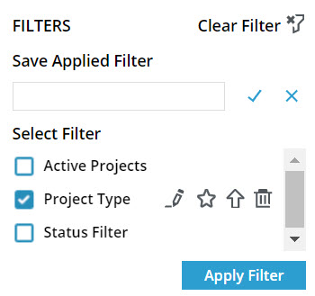

Using a Pre-Defined Filter At least one saved filter exists. For information on saving a filter, refer to Saving a Filter. The following procedure describes the steps to use a pre-defined filter. The PROJECTS list page is used here as an example. In the module menu, click Projects. The list of projects you are invited to is displayed. In the tool bar, click . The FILTERS dialog box is displayed. In the Select Filter section, select the appropriate filter. Available options are filters defined for the page. For information on defining a filter, refer to Saving a Filter. Figure 1. Select Filter  Click Apply Filter. The filter is applied, and the color of the filter icon in the toolbar is turned blue. Optionally, to clear the filter, in the tool bar, click , and then click Clear Filter.
 .
The FILTERS dialog box is displayed.
.
The FILTERS dialog box is displayed.